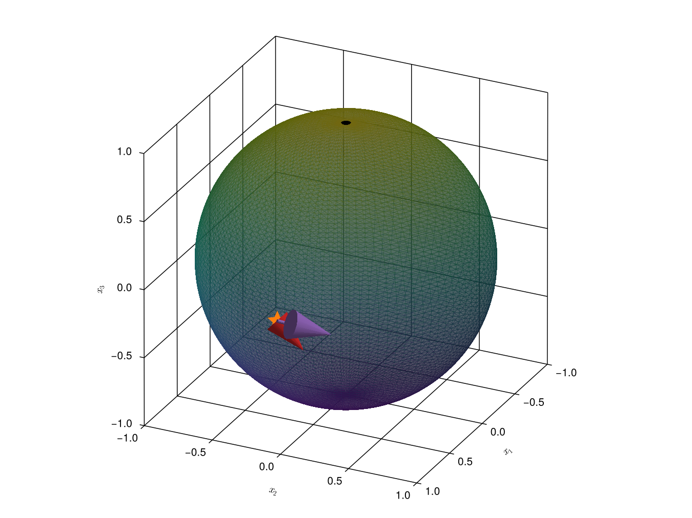
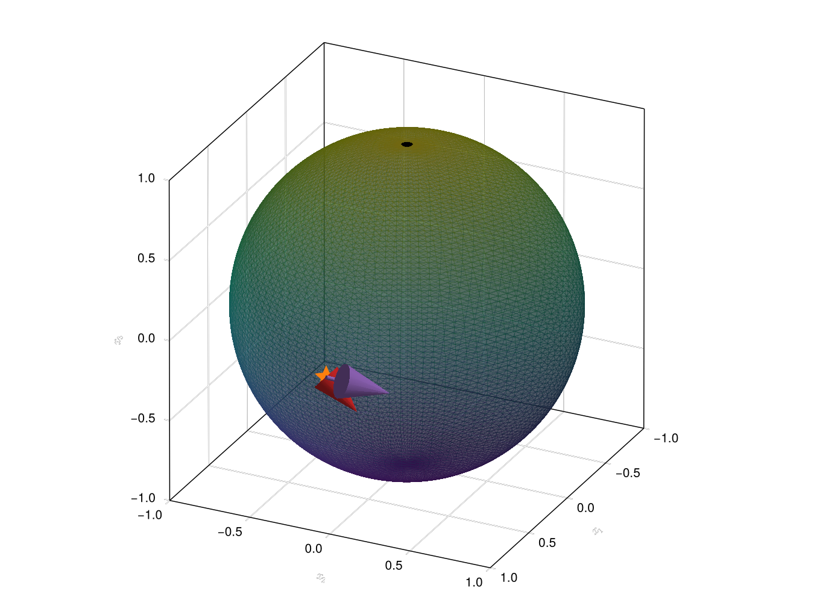
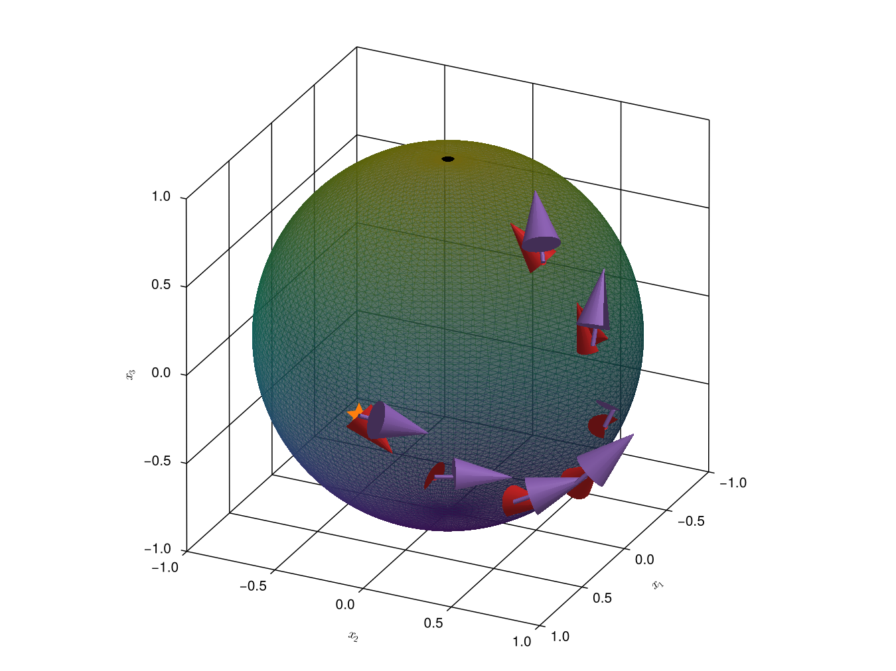
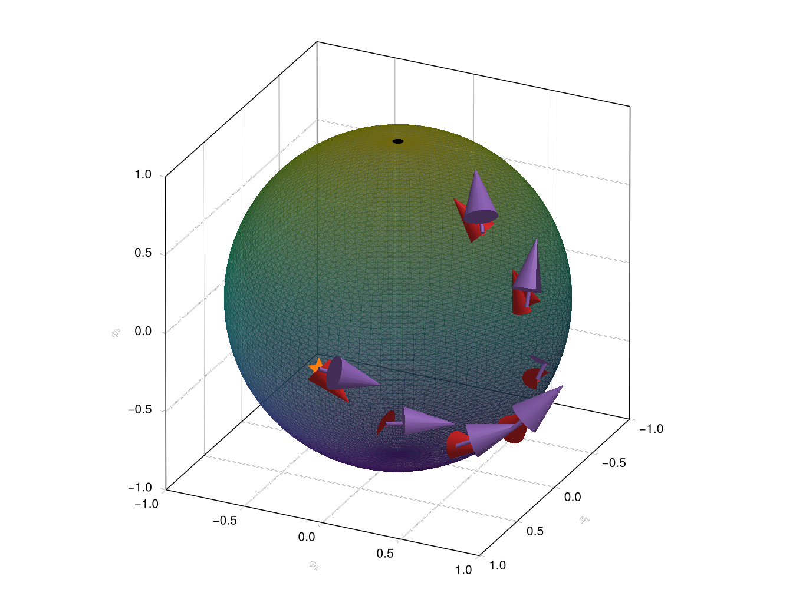

Parallel Transport
The concept of parallel transport along a geodesic $\gamma:[0, T]\to\mathcal{M}$ describes moving a tangent vector from $T_x\mathcal{M}$ to $T_{\gamma(t)}\mathcal{M}$ such that its orientation with respect to the geodesic is preserved.
A precise definition of parallel transport needs a notion of a connection [2, 3, 9] and we forego it here. We simply state how to parallel transport vectors on the Lie group $SO(N)$ and the homogeneous spaces $St(n, N)$ and $Gr(n, N)$.
Given two elements $B^A_1, B^A_2\in{}T_AG$ the parallel transport of $B^A_2$ along the geodesic of $B^A_1$ is given by
\[\Pi_{A\to\gamma_{B^A_1}(t)}B^A_2 = A\exp(t\cdot{}A^{-1}B^A_1)A^{-1}B^A_2 = A\exp(t\cdot{}B_1)B_2,\]
where $B_i := A^{-1}B^A_i.$
For the Stiefel manifold this is not much more complicated[1]:
Given two elements $\Delta_1, \Delta_2\in{}T_Y\mathcal{M}$, the parallel transport of $\Delta_2$ along the geodesic of $\Delta_1$ is given by
\[\Pi_{Y\to\gamma_{\Delta_1}(t)}\Delta_2 = \exp(t\cdot\Omega(Y, \Delta_1))\Delta_2 = \lambda(Y)\exp(\bar{B}_1)\lambda(Y)^{-1}\Delta_2,\]
where $\bar{B}_1 = \lambda(Y)^{-1}\Omega(Y, \Delta_1)\lambda(Y).$
We can further modify the expression of parallel transport for the Stiefel manifold:
\[\Pi_{Y\to\gamma_{\Delta_1}(t)}\Delta_2 = \lambda(Y)\exp(B_1)\lambda(Y)\Omega(Y, \Delta_2)Y = \lambda(Y)\exp(B_1)B_2E,\]
where $B_2 = \lambda(Y)^{-1}\Omega(Y, \Delta_2)\lambda(Y).$ We can now define explicit updating rules for the global section $\Lambda^{(\cdot)}$, the element of the homogeneous space $Y^{(\cdot)}$, the tangent vector $\Delta^{(\cdot)}$ and $D^{(\cdot)} = (\Lambda^{(\cdot)})^{-1}\Omega(\Delta^{(\cdot)})\Lambda^{(\cdot)}$, its representation in $\mathfrak{g}^\mathrm{hor}$.
We thus have:
- $\Lambda^{(t)} \leftarrow \Lambda^{(t-1)}\exp(B^{(t-1)}),$
- $Y^{(t)} \leftarrow \Lambda^{(t)}E,$
- $\Delta^{(t)} \leftarrow \Lambda^{(t-1)}\exp(B^{(t-1)})(\Lambda^{(t-1)})^{-1}\Delta^{(t-1)} = \Lambda^{(t)}D^{(t-1)}E,$
- $D^{(t)} \leftarrow D^{(t-1)}.$
So we conveniently take parallel transport of vectors into account by representing them in $\mathfrak{g}^\mathrm{hor}$: $D$ does not change.
To demonstrate parallel transport we again use the example from when we introduced the concept of geodesics. We first set up the problem:


Note that we have chosen the arrow here to have the same direction as before but only about half the magnitude. We further drew another arrow that we want to parallel transport (the purple arrow).
λY = GlobalSection(Y)
B = global_rep(λY, Δ)
B₂ = global_rep(λY, Δ₂)
E = StiefelProjection(3, 1)
Y_increments = []
Δ_transported = []
Δ₂_transported = []
const n_steps = 6
const timestep = 2
for _ in 1:n_steps
update_section!(λY, timestep * B, geodesic)
push!(Y_increments, copy(λY.Y))
push!(Δ_transported, Matrix(λY) * B * E)
push!(Δ₂_transported, Matrix(λY) * B₂ * E)
end

Note that the angle between the two vector is preserved as we go along the geodesic.
References
- [2]
- S. Lang. Fundamentals of differential geometry. Vol. 191 (Springer Science & Business Media, 2012).
- [3]
- S. I. Richard L. Bishop. Tensor Analysis on Manifolds (Dover Publications, Mineola, New York, 1980).
- [9]
- T. Bendokat, R. Zimmermann and P.-A. Absil. A Grassmann manifold handbook: Basic geometry and computational aspects, arXiv preprint arXiv:2011.13699 (2020).
- [23]
- M. Schlarb. Covariant Derivatives on Homogeneous Spaces: Horizontal Lifts and Parallel Transport. The Journal of Geometric Analysis 34, 1–43 (2024).